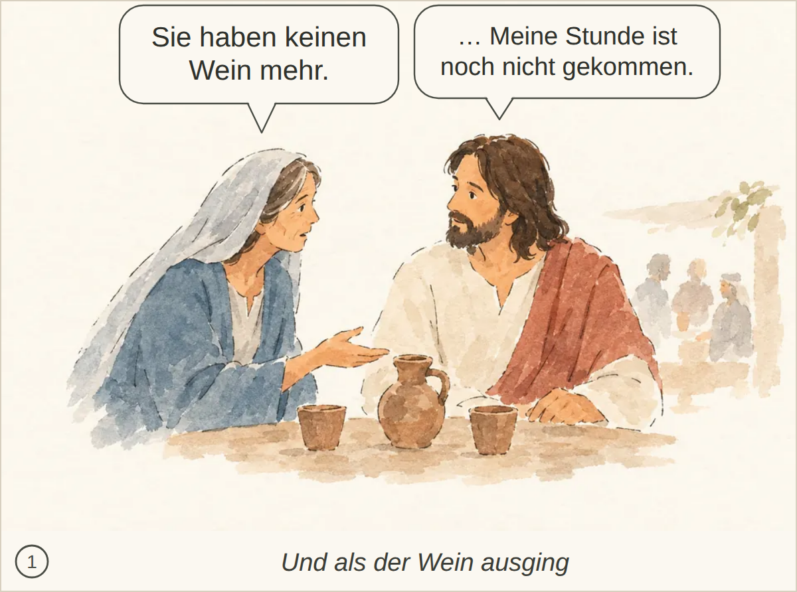
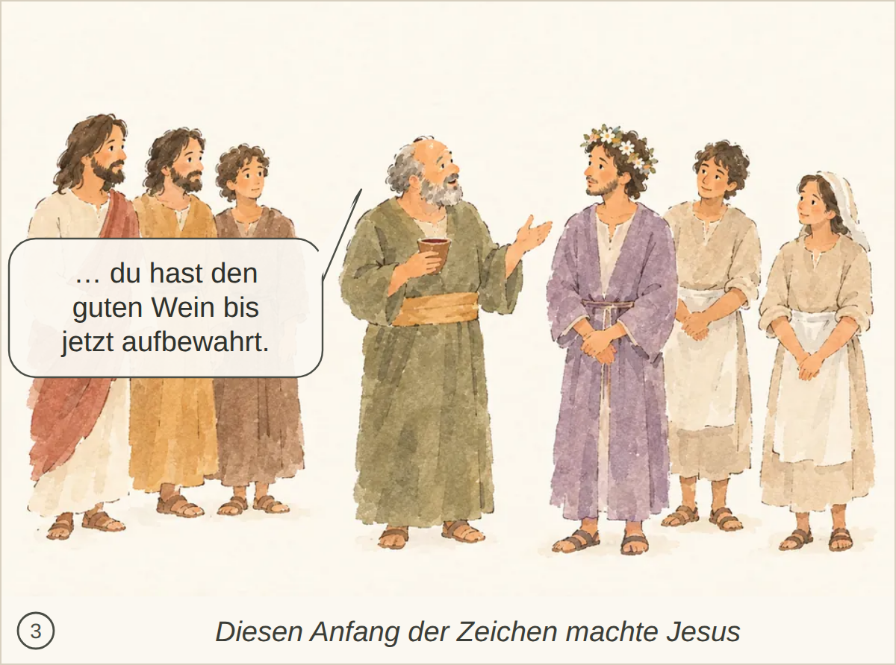
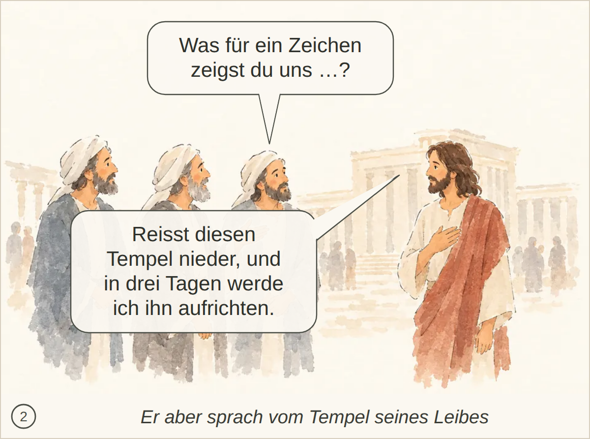
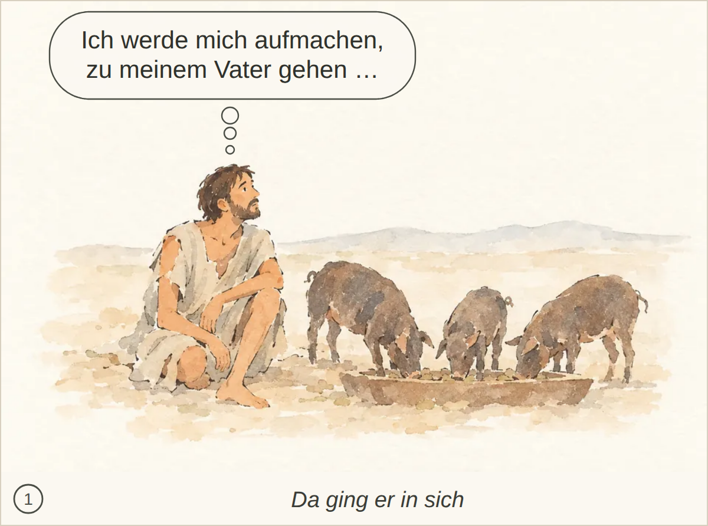
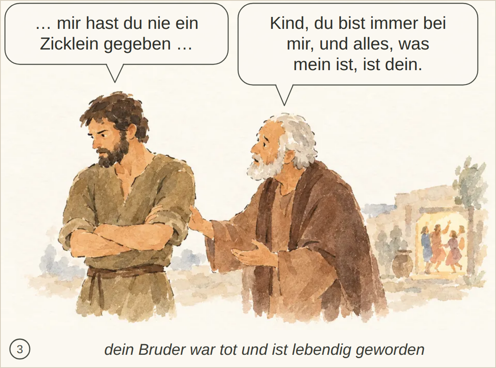
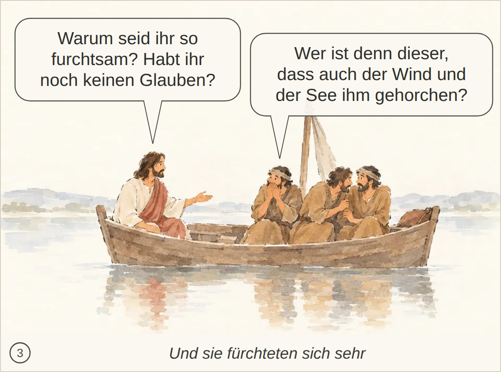

Kachel: bestanden, Kern 2 Nichts Wesentliches fehlt.

Kachel: bestanden, Kern 2 Nichts Wesentliches fehlt.

Kachel: bestanden, Kern 2 Nichts Wesentliches fehlt.
Kachel: bestanden, Kern 2 Nichts Wesentliches fehlt.

Kachel: bestanden, Kern 2 Nichts Wesentliches; die spätere Erinnerung der Jünger nach der Auferweckung wird nicht dargestellt.

Kachel: bestanden, Kern 1 Es fehlt, dass viele wegen der gesehenen Zeichen glauben und dass Jesus sich ihnen gerade nicht anvertraut; nur sein Wissen um die Herzen wird angedeutet.

Kachel: bestanden, Kern 1 Es fehlt Jesu Anweisung, nun zu schöpfen und es dem Speisemeister zu bringen.

Kachel: bestanden, Kern 2 Keine wesentlichen Abweichungen; Passa, Jerusalem und die Zeichen sind im Bild/der Beschreibung nicht ausdrücklich sichtbar.

Kachel: bestanden, Kern 2 Nichts Wesentliches fehlt.

Kachel: bestanden, Kern 2 Nichts Wesentliches; das Eintreten der grossen Stille ist nur angedeutet.

Kachel: bestanden, Kern 2 Nur Vorgeschichte/Details fehlen: verschleudertes Erbteil, Hungersnot und der genaue Bußsatz.

Kachel: bestanden, Kern 1 Die Umarmung und das Bekenntnis sind erkannt, aber der Kuss sowie die Anweisungen des Vaters zu Gewand, Ring, Sandalen und Mastkalb fehlen bzw. sind nicht erkannt.

Kachel: bestanden, Kern 2 Nichts Wesentliches fehlt; die Szene mit dem zornigen älteren Sohn und dem erklärenden Vater wird klar erkannt.

Kachel: durchgefallen, Kern 2 Nichts Wesentliches fehlt.